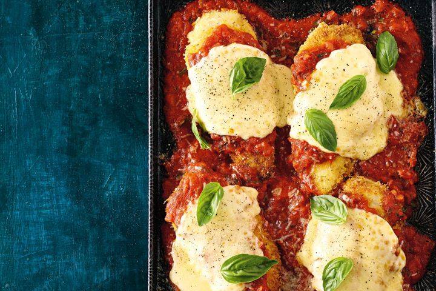

Chicken Parmigiana

Winner, winner, chicken parma is for dinner! Our version of this pub-food favourite will go down a treat with your hungry horde.
Ingredients:
- 2 tsp finely grated lemon rind
- 1 garlic clove, crushed
- 1 tsp oregano leaves
- 1 cup panko breadcrumbs
- 1/4 cup plain flour
- 1 egg, lightly beaten
- 1 tbsp milk
- 2 Free Range Chicken Breast, halved horizontally
- 1/4 cup Classic Extra Virgin Olive Oil
- 1 brown onion, finely chopped
- 2 garlic cloves, crushed, extra
- 700g btl Mutti Tomato Passata
- 2 tbsp chopped fresh basil, plus extra to serve
- 1/2 x 250g ball buffalo-style mozzarella, sliced
- 1/3 cup finely grated parmesan
- Salad leaves, to serve
Steps:
-
Combine rind, garlic and oregano in a large shallow bowl. Add breadcrumbs. Season with salt and pepper. Mix well. Place flour in a bowl. Whisk egg and milk in a separate shallow bowl. Working with 1 chicken piece at a time, toss in flour. Dip in egg mixture, then press in breadcrumb mixture to coat. Transfer to a plate.
-
Heat 2 tablespoons oil in a large frying pan over medium-high heat. Cook chicken for 4 to 5 minutes each side or until golden. Transfer to a plate.
- Heat remaining oil in pan. Add onion. Cook, stirring, for 5 minutes or until softened. Add extra garlic. Cook for 1 minute or until fragrant. Stir in passata and basil. Season. Bring to a simmer. Simmer for 3 to 4 minutes or until slightly thickened.
-
Preheat grill on medium-high. Spoon half the passata mixture onto a baking tray. Top with chicken. Spoon over remaining passata mixture. Top chicken with mozzarella and parmesan. Grill for 4 to 5 minutes or until cheese is melted and golden. Stand for 2 minutes. Top with extra basil. Serve with salad leaves.
Go to main